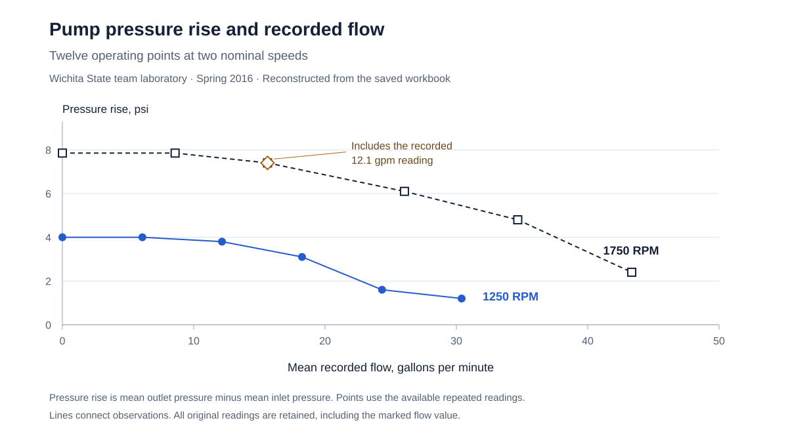

Pressure rise and recorded flow

What the measurements show
Within each recorded speed setting, pressure rise fell as flow increased. The higher speed series recorded a greater pressure rise across its test range. The workbook keeps the repeated readings, making it possible to inspect variation rather than relying only on a final average.
Keeping the unusual reading visible
One set of flow readings is 17.36, 17.4, and 12.1 gallons per minute. The plotted mean keeps all three values. The open diamond marks that point so the difference is visible and can be checked against the original record.
The record behind the plot
The source identifies this as team laboratory work and lists me among the participants. This presentation uses the workbook’s measured speeds and pressure readings. The plot is a new reconstruction of the preserved data.